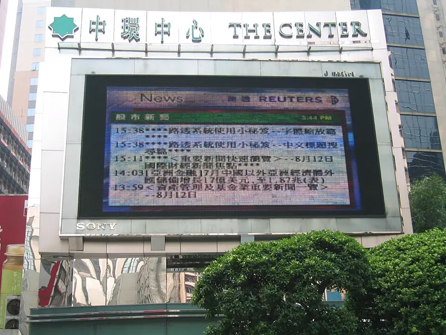

로이터 Reuters
로이터(Reuters)는 독일인 파울 율리우스 로이터가 설립한 영국의 뉴스·정보 제공 기업이다. 이 통신사는 신문·방송사 등에 뉴스를 공급하는 전통적인 역할과 함께 경제 증시 시황 속보 등 금융 정보를 제공한다.
최종 업데이트

로이터는 어떤 브랜드인가
로이터(Reuters)는 통신사의 하나로, 독일인 파울 율리우스 로이터가 설립한 영국의 뉴스·정보 제공 기업이다. 미국 AP통신, 프랑스 AFP통신 등과 함께 주요 통신사로 평가받고 있다.
현재는 신문·방송사 등에 뉴스를 공급하는 전통적인 통신사의 기능과 함께 경제 증시 시황 속보 등 금융 정보 제공의 역할을 수행한다. 특히 매출의 95% 이상을 금융정보 서비스로 올리는 등 이 분야에 집중한다.
2007년 캐나다의 정보서비스 대기업인 톰슨 코퍼레이션에 인수되었으며, 새 회사명은 톰슨 로이터가 되었다. 금융정보 서비스에서 세계 최대기업이 되었다고 한다.
로이터는 어떻게 시작되고 성장했나
로이터는 1851년 유대계 독일인 파울 율리우스 로이터가 프랑스에서 통신사 경영에 대해 배운 뒤 런던으로 이주하여 설립했다. 그는 정확하고 신속한 뉴스의 수집과 배급으로 신뢰를 쌓았다.
1851년에는 영불해협에 있는 해저 케이블을 사용해서 파리의 주식시장 정보, 런던의 금융정보를 각지에 송신했다. 1870년에는 당시 유럽의 통신사인 아바스, 볼프와 시장 분할 협정을 맺고, 미국을 제외한 세계 뉴스를 3사가 독점하는 `대동맹`을 형성했다.
이 `대동맹`은 후일 AP 등에 의해 깨질 때까지 로이터의 세계 지배 기반이 되었다.
로이터의 브랜드 아이덴티티는 무엇인가
로이터는 전통적인 뉴스 통신사 기능을 넘어 경제 및 금융 정보 제공의 핵심적인 역할을 수행하는 것이 특징이다. 톰슨 로이터의 일원으로서 금융정보 서비스 분야에서 세계 최대 기업으로 자리매김했다.
로이터의 대표 제품과 서비스는 무엇인가
로이터는 신문과 방송사 등에 뉴스를 공급하는 전통적인 통신사 서비스를 제공한다. 또한 경제 증시 시황 속보 등 금융 정보 제공 역할을 수행하며, 이것이 현재 매출의 95% 이상을 차지한다.
1980년대 경영개선을 위해 경제뉴스나 금융정보 서비스 강화를 추진했고, 외환거래 중개업무에도 착수했다. 2004년 미국의 금융정보회사인 머니라인 텔리레이트사와 일본경제신문사의 자회사 QUICK 머니라인 텔리레이트를 매입했다.
현재 로이터는 금융정보와 보도 부문에서 `로이터`라는 브랜드를 계속 사용한다.
로이터는 지금 어떤 상태인가
2007년 5월 15일, 로이터는 캐나다의 정보서비스 대기업인 톰슨 코퍼레이션에 87억 파운드에 인수되는 데 합의했다고 전해졌다. 새 회사명은 톰슨 로이터이며, 금융정보 서비스에서 미국의 블룸버그를 제치고 세계 최대기업이 되었다고 한다.
금융정보와 보도 부문은 `로이터`라는 브랜드를 계속 사용하며, 로이터의 편집권 독립도 유지된다고 한다. 로이터는 150개국 230개 도시에 지국을 두고 19개 언어로 서비스를 제공하며, 현재 주요 매스컴들은 로이터와 계약하고 있다.
로이터 로고는 어떻게 변해왔나
시기는 위키데이터 로고 기간 또는 위키미디어 커먼즈 파일 정보 기준입니다. 이미지를 누르면 원본 파일과 라이선스를 볼 수 있습니다.
사진으로 보는 로이터의 역사

자주 묻는 질문
로이터는 어느 나라 브랜드인가요?
로이터는 영국의 미디어·엔터테인먼트 브랜드입니다.
로이터는 언제 설립되었나요?
로이터는 1851년 설립되었습니다.
로이터의 브랜드 아이덴티티는 무엇인가요?
로이터는 전통적인 뉴스 통신사 기능을 넘어 경제 및 금융 정보 제공의 핵심적인 역할을 수행하는 것이 특징이다.
로이터의 대표 제품은 무엇인가요?
로이터는 신문과 방송사 등에 뉴스를 공급하는 전통적인 통신사 서비스를 제공한다.
로이터는 어느 기업이 소유하고 있나요?
2007년 5월 15일, 로이터는 캐나다의 정보서비스 대기업인 톰슨 코퍼레이션에 87억 파운드에 인수되는 데 합의했다고 전해졌다.
로이터의 창업자는 누구인가요?
로이터의 창업자는 파울 율리우스 로이터입니다(위키데이터 기준).
로이터의 본사는 어디에 있나요?
로이터의 본사는 런던에 있습니다(위키데이터 기준).
출처와 검증
로이터 관련 참고: 공식 웹사이트 · 위키데이터 Q130879 · 한국어 위키백과 · 영어 위키백과. 브랜드명은 한글과 원어를 함께 표기하되 데이터에 없는 표기는 만들지 않습니다. 기원 국가·설립연도는 검수된 정의문에서 확인된 값을 우선하고, 없을 때만 공식 웹사이트 URL이 일치하는 위키데이터 개체의 값을 씁니다. 탄생일의 월·일은 위키데이터, 위키백과 정보상자, 본문 가운데 같은 연월로 확인되는 값만 싣고, 출처끼리 다르면 싣지 않습니다. 웹 첫 보관은 인터넷 아카이브가 공식 사이트 첫 화면을 처음 보관한 날로, 사이트 개설일과 다를 수 있습니다. 위키데이터 값은 2026-09-07 기준입니다.